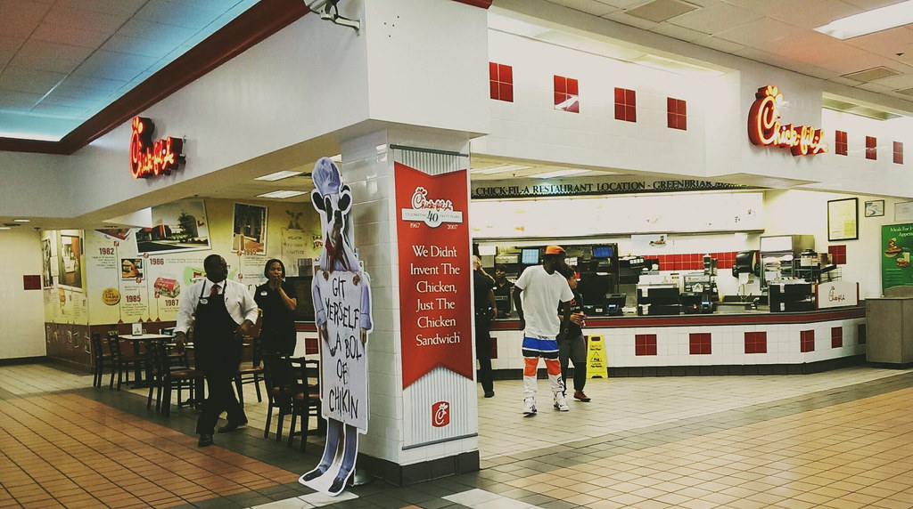

The creaton of the chicken sandwich was iconic for Samuel Cathy and the Chick Fil A franchise. After an initial failed attempt to move away from his first restaurant, Dwarf House, Cathy took the chicken sandwich and made it his focus. Playing with the words "chicken" and "fillet" allowed him to come up with "Chick Fil A". The A stands for the fantastic level of quality that the restaurant would aim to provide six days a week.
At first, Chick Fil A was not a restaurant. It only sold its products through other restuarants and eateries. However, Cathy feared that another company would copy his idea so he decided to open up an official Chick Fil A restaurant in Greenbriar Mall in southern Atlanta, GA. That moment was the birth of the first official Chick Fil A.

The information above was provided at: Enycolopedia.com